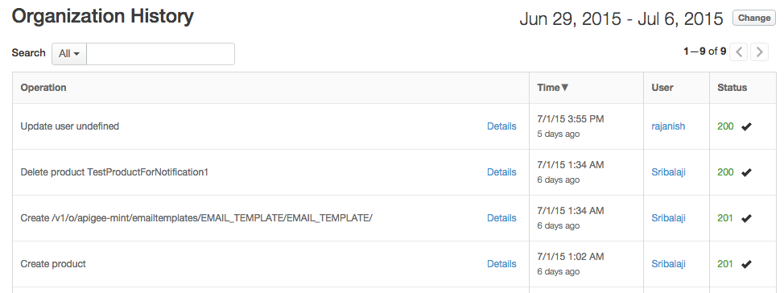

[toc]
Apigee Edge provides a "history" feature that can be helpful in troubleshooting problems as well as managing API usage. The history feature enables you to view the operations (create, update, read, delete, deploy, undeploy) that have been performed on your APIs and API products over time. You can see who performed each operation, when the operation was performed, the request URI, and the response code. For update operations, you can also view the request body that was as passed in the API call.
To view the history of an API:
This displays the history for the API.
[[{"type":"media","view_mode":"media_original","fid":"1679","attributes":{"alt":"","class":"media-image","height":"216","style":"width: 650px; height: 216px; border-width: 1px; border-style: solid; margin: 15px;","typeof":"foaf:Image","width":"650"}}]]
[[{"type":"media","view_mode":"media_original","fid":"1680","attributes":{"alt":"","class":"media-image","height":"289","style":"width: 650px; height: 289px; border-width: 1px; border-style: solid; margin: 15px;","typeof":"foaf:Image","width":"650"}}]]
To view the history of an API product:
[[{"type":"media","view_mode":"media_original","fid":"1681","attributes":{"alt":"","class":"media-image","height":"103","style":"width: 650px; height: 103px; border-width: 1px; border-style: solid; margin: 15px;","typeof":"foaf:Image","width":"650"}}]]
This displays the history for the API product.
[[{"type":"media","view_mode":"media_original","fid":"1682","attributes":{"alt":"","class":"media-image","height":"139","style":"width: 650px; height: 139px; border-width: 1px; border-style: solid; margin: 15px;","typeof":"foaf:Image","width":"650"}}]]
To view organization-level changes (Organization Administrator role), select Admin > Organization History in the Edge management UI. Click Details in row to see more information about a particular change, such as the management API call that was made and the operation that was executed.
